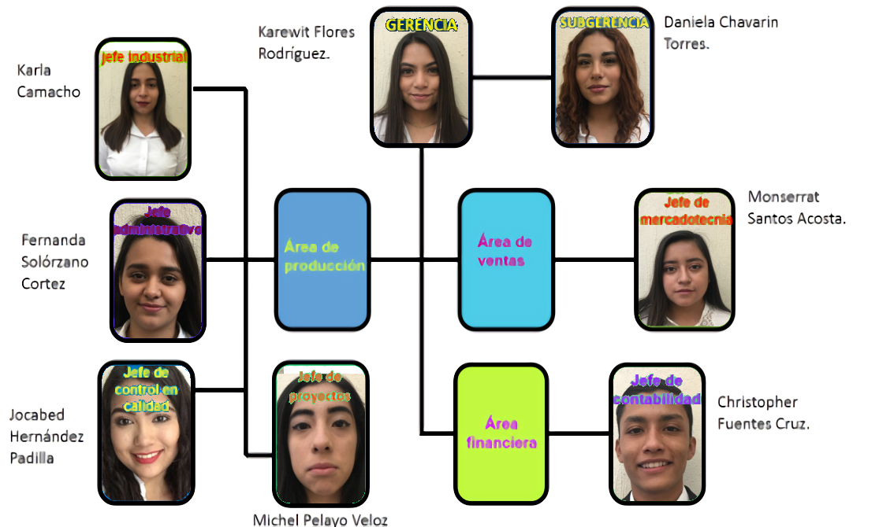
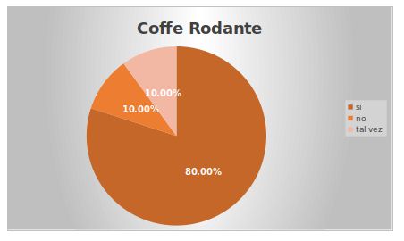
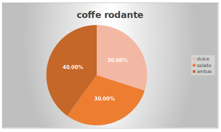
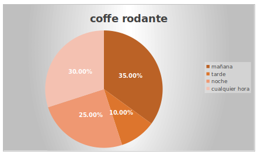
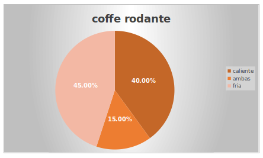
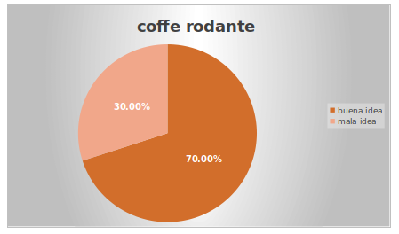

Grupo de individuos afiliados determinados a ejecutar esta aspiración ya que no hemos acontecido a proceder tal comercio en el cual sea acarreado una furgoneta donde se proporciona artículo que se encuentra elaborado con sustancias de cafeína entre otros, en nuestro punto geográfico donde nos situamos en el asteroide.
Hojas:
Representa que nuestra compañía se encuentra vinculada al cuidado del medio ambiente.
Bicicleta:
Objeto que circula con la asistencia de un triciclo adaptado a las necesidades y ocupaciones del proyecto.
Corazón:
Es un elemento de estima y cordialidad para obtener un entorno confortable.
Verde limón:
La tonalidad del desarrollo ha evolucionado en la regeneración se ha vinculado con la lozanía, frescura, serenidad y la emisión la incógnita en circunstancias en el entorno ambiental.
Blanco:
Conlleva un flamante debut personifica algo pulcro nos ampara a seguir a adelante.
Verde aqua:
Se asocia el blindaje restablecimiento en los sentidos humanitario.
Rosa:
Protagoniza indolencia que delega una comunicación en arte.
Negro:
Vinculado a la jurisdicción, distinción en la enigma
Coffe Rodante, un servicio o empresa innovadora de sustancias adquiridas por café y alimentos en cuerpo de la sustancia o complacencia, asignándole referido nombramiento por los puntos precitados y transformamiento de un elemento circulatorio en cafetería establecida en deslizarse por medio de un triciclo almacenando los productos indicados, en el diseño identificador de la empresa Coffe Rodante sustituye una bicicleta a la letra “O” mediante que la bicicleta muestra sentido giratorio por las ruedas de igual forma circular que la letra “O” en sistema del proceso proponente originamos el titulo situado.
Donde cada momento, toma color y sabor.
La industria sitiada “Coffee Rodante” es un comercio que cubre una necesidad primaria de alimentación que promete un alto valor nutrimental y un costo razonable, que consta de productos 100% natural, realizando el artículo de consistencia liquida ya sea con degustación dulce o amarga en el instante en que el usuario lo prefiera trayendo innovadora la idea en nuestra habitación.
El término café proviene de locución turco “kahve” (café) a su vez, procedente de árabe. De fermentación con degustación a cafeína se denomina el sustento consumido frecuentemente como néctar que se obtiene por infusión a partir de los frutos y semillas. Suele tomarse como desayuno o en la sobremesa posteriormente de las comidas, y es una del elixir sin extracto de alcohol más socializadoras en muchas partes de los parajes.
Identifica el sentido general de la condición engendrada por medio del conocimiento o la idea de los principios y valores considerando la realización del éxito cumpliendo con el desarrollo de satisfacerse en tendencia de triunfo emocional y físico concluyendo con un mayor enfoque favoreciendo al proceso de Coffe Rodante.
Respeto:
Admitir y estimar a quienes nos rodean proporcionando una buena relación sin hacer distinción entre el personal y sosteniendo una conducta pacífica.
Higiene:
Estar limpios en la zona y periodo de labor para así evitar padecimientos tanto del empleado como la protección del cliente.
Puntualidad:
En la hora de ingresar y salir de nuestra compañía así como también el lapso de producir algún encargo de nuestros clientes.
Responsabilidad:
Realizar sus labores en el lapso y modo, así como hacerse responsables de algún conflicto producido por el mismo.
Integridad:
Aumentar su desempeño y que practiquen su ocupación con certeza y honradez de la compañía.
No percibimos más servicios, con atributos de manera similar a nuestro funcionamiento.
El planteamiento sentenciado percata novedosamente por las zonas seleccionadas.
Se encuentra en disposición favorable al consumiente, sin necesidad de trasladarse a determinada ubicación.
Nuestra empresa, fluye por medio de ir circulando por el área acudida, atrayendo popularidad hacia los pobladores.
Disponer asociamiento con distintas compañías elaboradoras de sustancias y alimentos en parentesco a nuestro encomiendo.
Registrar fomento accesibles, satisfaciendo de igual modo nuestro servicio y al cliente, resultando atrayente.
Padecer de falta de certeza en los individuos por ser una empresa lanzada recientemente.
Al comienzo más carencia del propio.
Que el plan falle de manera destinada.
Una cafetería ya notable puede reiterar nuestra idea.
No extraer ganancias deseadas.
Ejecutar con las condiciones de nuestros bienes de los inversionistas.
Indemnizar los menesteres de los consumidores con la satisfacción o un beneficio.
Emplear la cultura y experiencia de ser una empresa innovadora y atractivo para la colectividad.
Gerencia:
Encargado general de la empresa capazmente dirigiendo, gestionando y administrando las funciones de las demás áreas de trabajo representando un nivel de liderazgo, teniendo una responsabilidad con mayor autoridad y comprometedora frente a terceros, coordinando íntegramente los recursos a través de planeamiento, organización y control a fin de lograr objetos.
Subgerencia:
Directamente extensión subordina de gestión gerencial, asistente en su lugar al ausentarse el gerente por compromisos no previstos, quedando a mando exactamente de todas las secciones y actividades sucedidas o elaboradas mediante el transcurso del plazo
Jefe administrativo:
Establecido específicamente coordinando, supervisando, y controlando la ejecución de todos los procedimientos bien realizados, mediante la función custodia de documentos legales.
Jefe de proyectos:
Responsable de las planificaciones elaboradas en relación de dirigirse en búsqueda de resultados triunfantes, diseñando novedosas estrategias implantando encontrándonos en un nivel primordial en el mercado ante la competencia.
Jefe industrial:
Basándose en la seguridad política del empleado, cliente, empresa, y servicio. Supervisando todo los beneficios que se van produciendo instantáneo y las perdidas controlándolas de manera que se balanceen hasta su eliminación.
Jefe de control de calidad:
Constituye en los compromisos y decisiones se llevan de manera adecuadamente y con embasamiento en hechos. Enfocándose en todo el sistema centrado en la satisfacción del cliente y buscando oportunidades beneficiosas con el proveedor.
Jefe de mercadotecnia:
Principalmente enfocándose en la valoración de la publicidad, analizando la competencia contemplando estrategias atrayentes, ideas innovadoras causante de un mayor consumo y mejoramiento de ventas, promocionándose con la finalidad de propaganda auxiliándose de patrocinadores.
Jefe de contabilidad:
Basado al control de gastos financieros (gastos, ganancias y pérdidas) y organizando las verificaciones de contabilidad y tesorería poniéndolas en funcionamiento adecuado.

Puntualidad laboral; se retirara el bono de regularidad al tercer retardo, y así mismo se le descontara el día.
Se considera demora después de 10 minutos en el tiempo de ingreso.
El personal no podrá laborar estado de embriaguez o bajo el efecto de una droga.
Si se localiza al trabajador en bajo el efecto de alguna droga será expulsado permanentemente de la empresa.
Todo el personal permanecerá en su área.
Respetar el horario de comida.
Ingerir alimentos de bajo olor.
Conservar aseada el área de trabajo.
El personal deberá ser tolerante y Cortez con sus compañeros y jefes.
Respeto a tu persona.
Las faltas se justificaran con receta médica.
No implicar inconvenientes particulares con el oficio.
No acoplar emociones en periodo de labor.
Desempeñar la perspectiva del consumidor.
Reconocer sus actos y compensar las consecuencias.
Actitud positiva en horario laboral.
Efectuar todas las horas de trabajo.
El personal deberá poseer un comportamiento ético.
El trabajador no obtendrá datos del cliente en horarios de labor.
Se contara con servicio y atención al cliente cuando se requiera.
Brindar un servicio eficiente y de calidad a los tres estamentos que componen la vida universitaria y al público general.
Proveer a la comunidad educativa universitaria alimentación basada en diferentes menús acorde con sus recursos económicos.
Garantizar que la producción diaria debe realizarse bajo estrictas normas de higiene y manipulación de alimentos y bajo la supervisión y recomendación de un nutricionista y la División de Control de Alimentos y Vigilancia Veterinaria del Ministerio de Salud.
Ofrecer productos de calidad, que suplan las necesidades y que estén al alcance de sus consumidores, con varios menús.
Ofrecer a los tres estamentos universitarios platos atractivos, inocuos y nutricionalmente balanceados.
Gestionar la consecución de insumos básicos para suplir a las cafeterías de insumos básicos y necesarios para garantizar un excelente servicio.
Ofrecer a los estudiantes el menú básico, único y exclusivamente para estudiantes de la UNACHI.
Brindar el menú básico, con exclusividad a los estudiantes, a un precio accesible y módico, según lo dispuesto por el Consejo Administrativo.
Ofrecer el servicio de alimentación gratuito a estudiantes de escasos recursos, según previa evaluación socioeconómica por la Dirección de Asuntos Estudiantiles de la UNACHI y a los representantes estudiantiles ante los órganos superiores de gobierno, previa confirmación de la asistencia a las sesiones.
Ofertar servicios especiales a la Universidad, instituciones gubernamentales y no gubernamentales, según solicitud de los interesados y la capacidad financiera y de respuesta de la Institución.
Procurar que los colaboradores y usuarios de la cafetería respeten las pautas y normas establecidas en estas políticas.
Presentar en forma visible y clara los precios de los alimentos ofrecidos.
Producto:
• Parte mayor proporcionamos atención a la producción que exportamos diariamente al consumidor esto contribuye con las diversas elaboraciones que contenemos con finalidad que el cliente tenga opción de elegir al gusto más de su agrado. Cualquiera de los productos que otorgamos sostienen una preparación de ingredientes de eminente calidad, considerando la mayoría un roce de café cultivado en México. Basado benefactora a la consumición de nuestra nación. Sustentando padecer un apetitoso postre puro. Envasado en desechables caracterizados atrayentes propios a nuestro servicio.
Precio:
• El costo enlazado a la inversión que se emplea en la calidad, los atributos que les estamos implementado en satisfacción del consumidor, añadiendo la utilidad valorada, cubriendo las condiciones del servicio y monitor. Analizando precios competentes y la capacidad económica
Plaza:
• La ventaja de Coffe Rodante consiste en que no está fijada en un cierto punto esta acondicionado por ir circulando por las zonas especificadas; San Pedro Tlaquepaque, Chapultepec Guadalajara, considerando el área departamental empresarial.
Se constituye favorable encontrándonos en ubicaciones accesibles, clasificando económicamente posible de adquirir un producto fluyendo que son sitios comerciantes y espacios negociantes
Promoción:
•Virtuosamente en el lapso transcurrido del horario establecido de trabajo va exhibiéndose procesando prestigio.
Servicial conveniente a la notoriedad favoreciendo promociones en algunos productos en fechas predichas complaciendo al cliente por parte.
Localizándonos por distintas páginas web donde podrás entrar a ver nuestros eventos o productos en promoción del día o del mes, compartiéndonos que estuviste comprando una deliciosa bebida o tu postre favorito. Con ventaja de subir una foto cada día que compres a la tercera vez, podrás presentar tus imágenes y elegirás un producto de tu agrado.
Nota: en días festivos no aplica
promociones
Coffe Rodante considera favorable atribuir en lugares que sea de mayor consumo la sustancia de cafeína o bebidas y alimentos en relación. Las zonas pronosticadas se manifiestan comerciables por lo que la mayoría de la comunidad pasea o se visualiza en agrupamientos y congresos negociables donde se pronostica superiormente el agrado de los productos brindados analizado que sería la posibilidad de consumo concluyendo con generosas ventas.
Principalmente visualizaremos los servicios competentes alrededor de las zonas establecidas, se interrogara a los habitantes que rodean el área, lo que con frecuencia consumen el valor que le dan para su accesibilidad y la importancia de agrado que le dan al servicio y mercancía.
Exhibición de muestrario para que degusten y contemplen la calidad. Examinando la principal venta con precios de inauguración.
Segmentación de mercado:
Envasado al ofrecimiento de nuestro servicio concluye que no es exclusiva la venta para ningún consumidor cualquiera que tenga disposición. Especificando favorable en negocio considerar a personas más consumientes de las sustancias o alimentos del menú estimando a las personas con alto trabajo por que deberán de establecerse en rendimiento consumiendo energéticos contemplando la cafeína que frecuentemente los productos de Coffe Rodante proporciona segmentado en el mercado con probabilidad de clientes entre 20 años a 40 años sin importancia de clase social.
Sistema de distribución:
Primordialmente la elaboración de los productos implementados (sustancias y alimentos) tienen mayormente en proporcionarles un agrado magnificente con la calidad otorgada. El traslado que se llevara, será por medio de la cafetería rodante circulando por las zonas pronosticadas exponiéndose de manera atrayente para el cliente con la mercancía empaquetada o preparada para servirse. Proporcionándoles seguridad y confianza en el momento de venta suscitando las opciones de bebidas o promociones del día o mes dependiendo las fechas presentadas.
¿Comprarías alguna bebida o postres en una cafetería rodante?

¿Qué te agrada más dulce o salado?

A qué hora del día consumirías nuestros productos?

¿Cómo te gustan las bebidas?

¿Qué opinas de una cafetería rodante?

A qué hora del día consumirías nuestros productos?